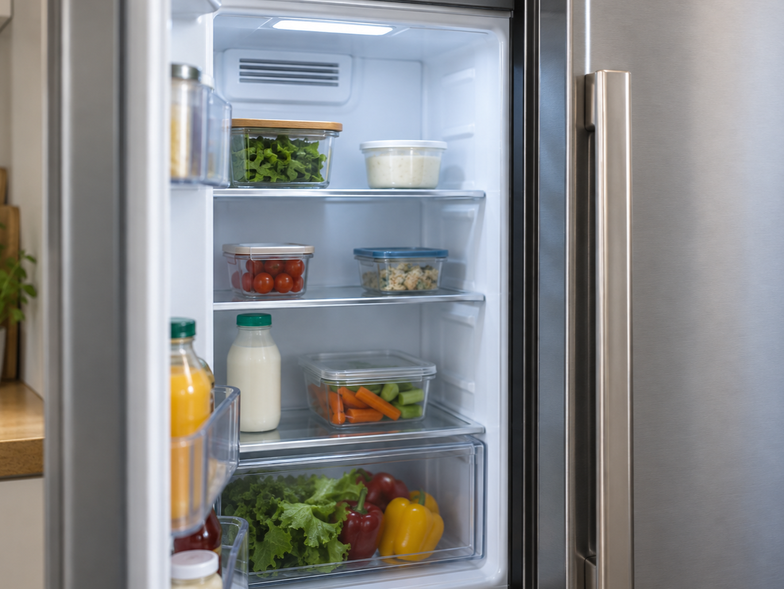
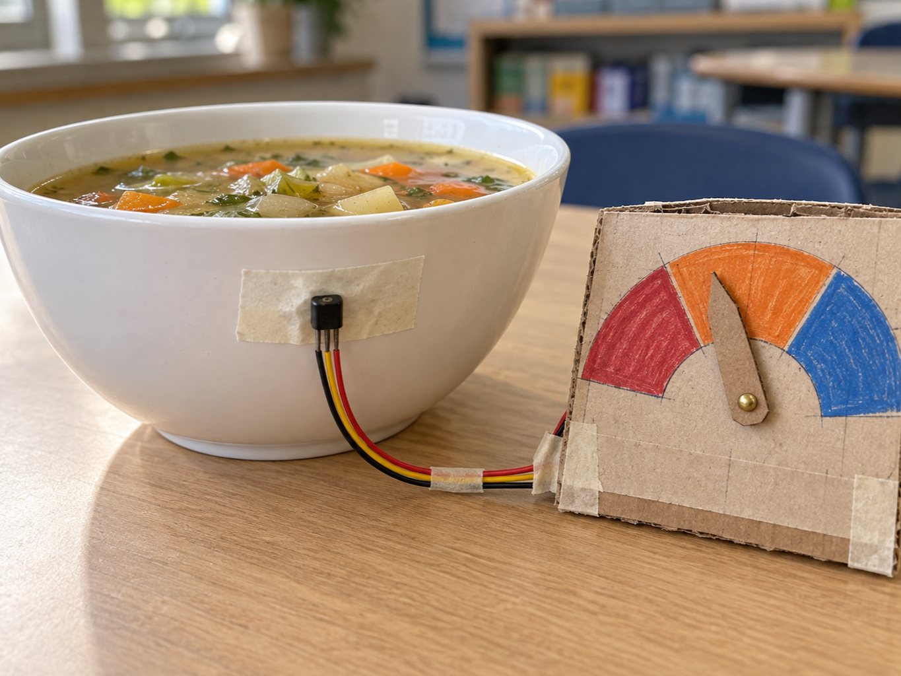

Refrigerator cooling
DetectMeasure fridge temperature
DecideIs it too warm?
DoIncrease the cooling
A TMP36 turns temperature into a changing voltage that a program can measure.
Its output rises by 10 millivolts for every degree Celsius, with 0.5 V representing 0 °C.
The Pico reads that voltage directly; the Raspberry Pi uses an MCP3008 analogue-to-digital converter.


from gpiozero import MCP3008
sensor = MCP3008(channel=0)
temperature = (sensor.voltage - 0.5) * 100from picozero import TemperatureSensor
convert = lambda voltage: (voltage - 0.5) * 100
sensor = TemperatureSensor(26, conversion=convert)
temperature = sensor.temp